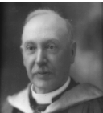

-1-MasterItem.svg)
Stories of Westminster United Church & its People / Page
39
CLARENCE MacKINNON, MINISTER, 1905-1909
Part 1
Clarence’s upbringing, by turns Scottish and North American, seems
to help explain his peculiar worldview — which was both Evangelical
and fairly liberal in the Enlightenment sense. And his intercontinental
upbringing can be explained with reference to his parents’ history.
Clarence’s father John was born in 1830 near Charlottetown, Prince
Edward Island. Sometime in his 20s, he travelled to Scotland to study for
the ministry (Scotland, of course, being the birthplace of Presbyterianism and
home to the Church
of Scotland or ‘Kirk’, which is Presbyterian). Evidently he learned something of the meaning of both
‘agápē’ and ‘eros’ in Scotland, as he returned to Canada in 1859 not just as a reverend but also
with
a Mrs. MacKinnon at his side, his love, Margaret Tait. Margaret surely possessed
great courage and
resilience. After making her leap of faith and moving with her new husband to
Hopewell, Nova Scotia
(near Truro), she had five children — all of whom perished in the scarlet fever epidemic, one of the
last great epidemics to sweep Canada. It is hard to imagine the emotional toll
this tragedy must
have had on her, and yet she carried on, having three more children — George, Clarence, and Albert
— all of whom survived to manhood and whose cultured interests suggest an
attentive upbringing.
(It is doubtful that the MacKinnons could have afforded a governess).
Both John and his father belonged to the Free Presbyterian Church, which
believed “in the obligation
of the State to maintain the ordinances of religion.” On the other hand, the United Presbyterian
Church, to which Clarence would belong, believed in free-will offerings by
congregations to support
their cause. A union eventually brought the two churches together; but this
reconciliation was
staggered, happening in Canada before Scotland. In 1881, Margaret set sail to
visit Scotland and
reunite with her relatives. Providence or fate once more assailed her plans, as
the voyage was a
disaster. High winds and a wildly restless sea forced the vessel to keep most of
its sails furled,
prolonging an already distressing and dangerous trip. When the winds finally
died down they did so
completely, further delaying their arrival to land. The vessel had to idly wait
a week for another burst
Table
of Contents
